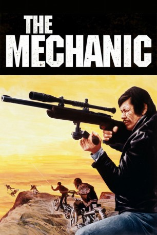
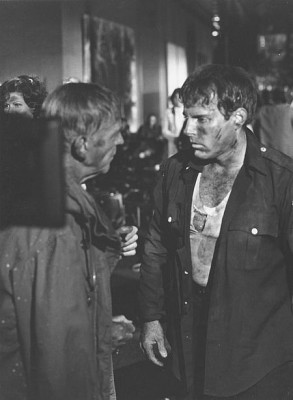

#5094 Kalter Hauch
Alternativ: The Mechanic
 
 IMDB-Wertung: 7.0 / 10
IMDB-Wertung: 7.0 / 10  Metascore: 0
Metascore: 0 
Auftragskiller Arthur Bishop, genannt der Mechaniker, erledigt seine Jobs präzise, perfekt und ohne Spuren, lässt die Morde wie Unfälle aussehen, auch den an seinem alten Freund McKenna. Bishop ist so abgebrüht, dass er dessen Sohn Steve ausbildet, der schnell lernt. Bishop unterlaufen Unachtsamkeiten. Der Boss gibt Bishop die Chance zur Wiedergutmachung: Er soll als letzten Spezialauftrag in Italien einen Mafioso töten. Als der Job erledigt ist, tötet McKenna Bishop. Er freut sich zu früh: Bishop hat eine Sprengladung in seinem Ferrari installiert.
Jahr: 1972
Dauer: 100 Minuten
FSK: 16
Land: USA Studio: United ArtistsTonspuren:
Untertitel:
Auflösung: 1080p (1920x1040) Größe: 9553 MB
Genre: Action, Thriller, Krimi
Regisseur: Michael Winner
Drehbuch: Sebastián Lelio
Soundtrack:
Darsteller:
 Charles Bronson als Arthur Bishop
Charles Bronson als Arthur Bishop Jan-Michael Vincent als Steve McKenna
Jan-Michael Vincent als Steve McKenna Keenan Wynn als Harry McKenna 'Big Harry'
Keenan Wynn als Harry McKenna 'Big Harry' Jill Ireland als The Girl
Jill Ireland als The Girl Frank DeKova als The Man
Frank DeKova als The Man- James Davidson als Intern
- Celeste Yarnall als The Mark's Girl
 Steve Vinovich als Party Guest
Steve Vinovich als Party Guest- John Barclay als Garden Party Man , uncredited
-  Ernie F. Orsatti als Chickin Lickin' Driver , uncredited
- Linda Ridgeway als Louise, Steve McKenna's Girlfriend
- Lindsay Crosby als Policeman
- Steve Cory als Messenger
- Tak Kubota als Yamoto
- Patrick O'Moore als Old Man
- Martin Gordon als American Tourist
- Athena Lorde als Old Woman
- Alison Rose als Young Girl
- Howard Morton als Car Polish Man
 Enzo Fiermonte als The Mark
Enzo Fiermonte als The Mark- Gerald Peters als Butler
- Robert Jaffe als Party Guest
- Kevin O'Neal als Party Guest
- Kenneth Wolger als 1st Hippie
- Trini Mitchum als 3rd Hippie
- Amando De Vincenzo als Priest
- Louis Fitch als Librarian , uncredited
- Chris Forbes als Bikini Waitress , uncredited
- Hiroyasu Fujishima als Aikido Master , uncredited
- Alan Gibbs als 1st Bodyguard , uncredited
- Linda Grant als Bathtub Girl , uncredited
- Hank Hamilton als Kori , uncredited
- Michael Hinn als Rifle Range Attendant , uncredited
- Frank Orsatti als 2nd Bodyguard , uncredited
- J.N. Roberts als Gang Leader , uncredited
- Sara Taft als Garden Party Woman , uncredited
Datei: X:\1972\Kalter Hauch (1972, FSK16, 1920x1040).mkv seit 23.12.2016
Festplatte: HD 1971-1979
 Es gibt insgesamt 26 Filme in der Gruppe '1972'
Es gibt insgesamt 26 Filme in der Gruppe '1972'